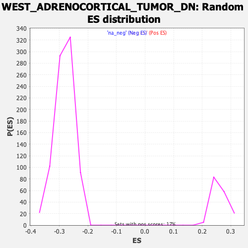

| | | Dataset | DE_genes |
| Phenotype | NoPhenotypeAvailable |
| Upregulated in class | na_neg |
| GeneSet | WEST_ADRENOCORTICAL_TUMOR_DN |
| Enrichment Score (ES) | -0.4793619 |
| Normalized Enrichment Score (NES) | -1.6958807 |
| Nominal p-value | 0.0 |
| FDR q-value | 0.044104964 |
| FWER p-Value | 0.591 |
Table: GSEA Results Summary
 Fig 1: Enrichment plot: WEST_ADRENOCORTICAL_TUMOR_DN
Fig 1: Enrichment plot: WEST_ADRENOCORTICAL_TUMOR_DN
Profile of the Running ES Score & Positions of GeneSet Members on the Rank Ordered List
| PROBE | GENE SYMBOL | GENE_TITLE | RANK IN GENE LIST | RANK METRIC SCORE | RUNNING ES | CORE ENRICHMENT | | 1 | IFITM2 | | | 23 | 11.709 | 0.0227 | No |
| 2 | TNFSF10 | | | 80 | 7.044 | 0.0336 | No |
| 3 | CYBB | | | 231 | 3.449 | 0.0307 | No |
| 4 | CYP7B1 | | | 247 | 3.316 | 0.0366 | No |
| 5 | CDH2 | | | 255 | 3.208 | 0.0427 | No |
| 6 | CCL2 | | | 284 | 2.886 | 0.0468 | No |
| 7 | NCF4 | | | 313 | 2.656 | 0.0505 | No |
| 8 | LY6E | | | 391 | 2.250 | 0.0500 | No |
| 9 | GMPR | | | 403 | 2.179 | 0.0538 | No |
| 10 | CD55 | | | 413 | 2.110 | 0.0575 | No |
| 11 | APOL6 | | | 424 | 2.052 | 0.0611 | No |
| 12 | MXRA5 | | | 509 | 1.715 | 0.0591 | No |
| 13 | TPSAB1 | | | 520 | 1.683 | 0.0619 | No |
| 14 | LYRM1 | | | 553 | 1.573 | 0.0630 | No |
| 15 | IL18BP | | | 563 | 1.553 | 0.0656 | No |
| 16 | SOD3 | | | 613 | 1.440 | 0.0653 | No |
| 17 | APOD | | | 615 | 1.435 | 0.0682 | No |
| 18 | IRF5 | | | 629 | 1.404 | 0.0703 | No |
| 19 | C1S | | | 637 | 1.391 | 0.0727 | No |
| 20 | PDGFRA | | | 680 | 1.313 | 0.0726 | No |
| 21 | SIRPA | | | 728 | 1.233 | 0.0720 | No |
| 22 | FAS | | | 811 | 1.091 | 0.0688 | No |
| 23 | SLC25A28 | | | 821 | 1.082 | 0.0704 | No |
| 24 | METTL9 | | | 837 | 1.062 | 0.0716 | No |
| 25 | VCAN | | | 881 | 0.999 | 0.0708 | No |
| 26 | RBKS | | | 898 | 0.984 | 0.0718 | No |
| 27 | GPC3 | | | 971 | 0.896 | 0.0688 | No |
| 28 | FBLN5 | | | 992 | 0.867 | 0.0693 | No |
| 29 | GAS1 | | | 1138 | 0.731 | 0.0611 | No |
| 30 | PLTP | | | 1144 | 0.724 | 0.0623 | No |
| 31 | G0S2 | | | 1209 | 0.673 | 0.0594 | No |
| 32 | CNN2 | | | 1246 | 0.643 | 0.0584 | No |
| 33 | SERPING1 | | | 1314 | 0.606 | 0.0551 | No |
| 34 | HDDC2 | | | 1330 | 0.599 | 0.0554 | No |
| 35 | RBPMS | | | 1335 | 0.595 | 0.0563 | No |
| 36 | SOX9 | | | 1338 | 0.594 | 0.0574 | No |
| 37 | RPL39 | | | 1339 | 0.591 | 0.0587 | No |
| 38 | MAOB | | | 1375 | 0.573 | 0.0575 | No |
| 39 | MT2A | | | 1418 | 0.560 | 0.0559 | No |
| 40 | ASPN | | | 1446 | 0.545 | 0.0552 | No |
| 41 | LSP1 | | | 1478 | 0.527 | 0.0542 | No |
| 42 | VAMP2 | | | 1485 | 0.524 | 0.0549 | No |
| 43 | RCBTB2 | | | 1538 | 0.500 | 0.0525 | No |
| 44 | C3 | | | 1577 | 0.480 | 0.0509 | No |
| 45 | PLD1 | | | 1593 | 0.474 | 0.0509 | No |
| 46 | EMILIN1 | | | 1600 | 0.472 | 0.0515 | No |
| 47 | LPAR1 | | | 1655 | 0.451 | 0.0488 | No |
| 48 | CREM | | | 1658 | 0.451 | 0.0496 | No |
| 49 | SF1 | | | 1691 | 0.436 | 0.0484 | No |
| 50 | ESR1 | | | 1704 | 0.430 | 0.0485 | No |
| 51 | KYNU | | | 1739 | 0.412 | 0.0471 | No |
| 52 | RPL38 | | | 1745 | 0.410 | 0.0476 | No |
| 53 | TPT1 | | | 1785 | 0.397 | 0.0458 | No |
| 54 | DIP2C | | | 1795 | 0.392 | 0.0460 | No |
| 55 | AKR1B1 | | | 1822 | 0.383 | 0.0451 | No |
| 56 | APOC1 | | | 1856 | 0.369 | 0.0436 | No |
| 57 | IFI35 | | | 1905 | 0.353 | 0.0411 | No |
| 58 | COL4A4 | | | 1997 | 0.328 | 0.0357 | No |
| 59 | LUZP2 | | | 2038 | 0.316 | 0.0337 | No |
| 60 | BGN | | | 2051 | 0.311 | 0.0336 | No |
| 61 | LUM | | | 2169 | 0.275 | 0.0263 | No |
| 62 | CYP2A6 | | | 2181 | 0.273 | 0.0262 | No |
| 63 | DHRS1 | | | 2189 | 0.269 | 0.0263 | No |
| 64 | RSC1A1 | | | 2202 | 0.266 | 0.0260 | No |
| 65 | ALDH3A2 | | | 2225 | 0.261 | 0.0251 | No |
| 66 | ICAM1 | | | 2366 | 0.229 | 0.0162 | No |
| 67 | WWP2 | | | 2435 | 0.219 | 0.0121 | No |
| 68 | FLVCR2 | | | 2436 | 0.218 | 0.0126 | No |
| 69 | IFT46 | | | 2447 | 0.216 | 0.0123 | No |
| 70 | CFD | | | 2550 | 0.200 | 0.0060 | No |
| 71 | MOXD1 | | | 2577 | 0.193 | 0.0046 | No |
| 72 | B3GNT4 | | | 2770 | 0.165 | -0.0079 | No |
| 73 | ZYX | | | 2857 | 0.155 | -0.0133 | No |
| 74 | PCDHGC3 | | | 2918 | 0.147 | -0.0170 | No |
| 75 | RPL29 | | | 2921 | 0.147 | -0.0168 | No |
| 76 | CEBPD | | | 2951 | 0.145 | -0.0184 | No |
| 77 | CYP21A2 | | | 2997 | 0.140 | -0.0212 | No |
| 78 | CRHBP | | | 3194 | 0.123 | -0.0340 | No |
| 79 | ST3GAL6 | | | 3195 | 0.122 | -0.0337 | No |
| 80 | PLAT | | | 3481 | 0.100 | -0.0526 | No |
| 81 | PTPN4 | | | 3496 | 0.099 | -0.0533 | No |
| 82 | HIBCH | | | 3595 | 0.092 | -0.0596 | No |
| 83 | SSPN | | | 3613 | 0.092 | -0.0606 | No |
| 84 | FOXC2 | | | 3632 | 0.090 | -0.0616 | No |
| 85 | RIMS2 | | | 3667 | 0.089 | -0.0637 | No |
| 86 | DCXR | | | 3724 | 0.086 | -0.0672 | No |
| 87 | AADAC | | | 3765 | 0.084 | -0.0697 | No |
| 88 | VSNL1 | | | 3776 | 0.083 | -0.0702 | No |
| 89 | PHACTR2 | | | 3779 | 0.083 | -0.0702 | No |
| 90 | VTN | | | 3829 | 0.080 | -0.0733 | No |
| 91 | RPL23 | | | 3866 | 0.078 | -0.0755 | No |
| 92 | PORCN | | | 3868 | 0.078 | -0.0755 | No |
| 93 | FLRT1 | | | 3960 | 0.072 | -0.0814 | No |
| 94 | SLC47A1 | | | 3968 | 0.072 | -0.0817 | No |
| 95 | COL6A1 | | | 4012 | 0.069 | -0.0844 | No |
| 96 | OGN | | | 4030 | 0.068 | -0.0854 | No |
| 97 | SREBF1 | | | 4099 | 0.064 | -0.0898 | No |
| 98 | NRXN1 | | | 4141 | 0.062 | -0.0924 | No |
| 99 | VWA5A | | | 4184 | 0.059 | -0.0951 | No |
| 100 | ATP2B3 | | | 4194 | 0.059 | -0.0956 | No |
| 101 | MMP2 | | | 4306 | 0.053 | -0.1029 | No |
| 102 | DLGAP1 | | | 4317 | 0.052 | -0.1035 | No |
| 103 | C7 | | | 4627 | 0.035 | -0.1240 | No |
| 104 | OLFML3 | | | 4765 | 0.028 | -0.1331 | No |
| 105 | DYNLT3 | | | 4904 | 0.021 | -0.1423 | No |
| 106 | MICAL2 | | | 4988 | 0.017 | -0.1478 | No |
| 107 | ESRRG | | | 5120 | 0.010 | -0.1565 | No |
| 108 | PARVA | | | 5127 | 0.010 | -0.1569 | No |
| 109 | RHOT1 | | | 5150 | 0.009 | -0.1583 | No |
| 110 | KAT6B | | | 5255 | 0.004 | -0.1653 | No |
| 111 | AGTR1 | | | 5340 | -0.001 | -0.1709 | No |
| 112 | ALDH1L1 | | | 5347 | -0.002 | -0.1713 | No |
| 113 | OPLAH | | | 5348 | -0.002 | -0.1713 | No |
| 114 | MT1H | | | 5350 | -0.002 | -0.1713 | No |
| 115 | SPATA20 | | | 5377 | -0.003 | -0.1731 | No |
| 116 | HOXB5 | | | 5383 | -0.003 | -0.1734 | No |
| 117 | SRGAP3 | | | 5402 | -0.004 | -0.1746 | No |
| 118 | C1R | | | 5634 | -0.017 | -0.1900 | No |
| 119 | SLC16A2 | | | 5689 | -0.020 | -0.1935 | No |
| 120 | MS4A2 | | | 5703 | -0.021 | -0.1944 | No |
| 121 | MICALL1 | | | 5704 | -0.021 | -0.1943 | No |
| 122 | NBL1 | | | 5734 | -0.022 | -0.1962 | No |
| 123 | RPL27 | | | 5754 | -0.023 | -0.1974 | No |
| 124 | MT1X | | | 5827 | -0.028 | -0.2022 | No |
| 125 | NPY1R | | | 5898 | -0.032 | -0.2068 | No |
| 126 | ZFP36 | | | 5936 | -0.035 | -0.2092 | No |
| 127 | EHD3 | | | 6044 | -0.042 | -0.2162 | No |
| 128 | KLF5 | | | 6057 | -0.043 | -0.2169 | No |
| 129 | PCSK2 | | | 6084 | -0.044 | -0.2186 | No |
| 130 | ACTG1 | | | 6134 | -0.048 | -0.2218 | No |
| 131 | MYO7A | | | 6187 | -0.052 | -0.2251 | No |
| 132 | RBMS3 | | | 6190 | -0.052 | -0.2251 | No |
| 133 | RARRES1 | | | 6212 | -0.053 | -0.2264 | No |
| 134 | KCNJ5 | | | 6229 | -0.054 | -0.2274 | No |
| 135 | INTS9 | | | 6252 | -0.056 | -0.2287 | No |
| 136 | CXCR5 | | | 6288 | -0.058 | -0.2310 | No |
| 137 | KCNN2 | | | 6292 | -0.058 | -0.2310 | No |
| 138 | DDX27 | | | 6321 | -0.060 | -0.2328 | No |
| 139 | CALD1 | | | 6398 | -0.065 | -0.2377 | No |
| 140 | POLDIP2 | | | 6404 | -0.066 | -0.2379 | No |
| 141 | PDGFD | | | 6409 | -0.066 | -0.2381 | No |
| 142 | PLN | | | 6410 | -0.066 | -0.2379 | No |
| 143 | DGKA | | | 6429 | -0.067 | -0.2390 | No |
| 144 | GPRASP1 | | | 6456 | -0.070 | -0.2406 | No |
| 145 | DNAJC12 | | | 6496 | -0.073 | -0.2430 | No |
| 146 | PLP1 | | | 6544 | -0.075 | -0.2460 | No |
| 147 | RARA | | | 6548 | -0.075 | -0.2461 | No |
| 148 | LTBP4 | | | 6587 | -0.079 | -0.2484 | No |
| 149 | FZD1 | | | 6610 | -0.081 | -0.2497 | No |
| 150 | AOX1 | | | 6641 | -0.084 | -0.2516 | No |
| 151 | CIB2 | | | 6705 | -0.089 | -0.2556 | No |
| 152 | GLS2 | | | 6713 | -0.089 | -0.2559 | No |
| 153 | WNT4 | | | 6753 | -0.092 | -0.2583 | No |
| 154 | SIRT2 | | | 6758 | -0.092 | -0.2584 | No |
| 155 | ASCC1 | | | 6979 | -0.109 | -0.2728 | No |
| 156 | TMCC1 | | | 6992 | -0.110 | -0.2734 | No |
| 157 | PHKG1 | | | 7030 | -0.113 | -0.2756 | No |
| 158 | CNNM2 | | | 7082 | -0.117 | -0.2788 | No |
| 159 | RPS4X | | | 7105 | -0.119 | -0.2800 | No |
| 160 | CUL5 | | | 7136 | -0.121 | -0.2818 | No |
| 161 | ALDH6A1 | | | 7203 | -0.127 | -0.2859 | No |
| 162 | IL17RB | | | 7208 | -0.128 | -0.2859 | No |
| 163 | MEIS3P1 | | | 7375 | -0.142 | -0.2967 | No |
| 164 | NAP1L1 | | | 7475 | -0.150 | -0.3030 | No |
| 165 | HGF | | | 7508 | -0.153 | -0.3048 | No |
| 166 | NPEPPS | | | 7523 | -0.154 | -0.3054 | No |
| 167 | TAGLN | | | 7604 | -0.162 | -0.3104 | No |
| 168 | TK2 | | | 7608 | -0.162 | -0.3103 | No |
| 169 | DNPH1 | | | 7611 | -0.163 | -0.3101 | No |
| 170 | ADAM22 | | | 7664 | -0.167 | -0.3132 | No |
| 171 | FAH | | | 7665 | -0.167 | -0.3129 | No |
| 172 | OMD | | | 7668 | -0.168 | -0.3127 | No |
| 173 | SPOCK2 | | | 7699 | -0.171 | -0.3143 | No |
| 174 | ACSM5 | | | 7718 | -0.172 | -0.3152 | No |
| 175 | DNAJC4 | | | 7735 | -0.173 | -0.3159 | No |
| 176 | LRP1 | | | 7763 | -0.176 | -0.3173 | No |
| 177 | LRRN3 | | | 7773 | -0.177 | -0.3175 | No |
| 178 | HTR2B | | | 7805 | -0.179 | -0.3192 | No |
| 179 | MSRA | | | 7830 | -0.182 | -0.3205 | No |
| 180 | ISLR | | | 7841 | -0.183 | -0.3207 | No |
| 181 | CD81 | | | 7912 | -0.190 | -0.3250 | No |
| 182 | PID1 | | | 7915 | -0.190 | -0.3248 | No |
| 183 | DEFB4A | | | 7926 | -0.191 | -0.3250 | No |
| 184 | EMD | | | 7928 | -0.192 | -0.3247 | No |
| 185 | CHRDL1 | | | 7930 | -0.192 | -0.3244 | No |
| 186 | CREBL2 | | | 7954 | -0.194 | -0.3255 | No |
| 187 | PIP4K2B | | | 7978 | -0.196 | -0.3266 | No |
| 188 | MGP | | | 8000 | -0.198 | -0.3276 | No |
| 189 | IGFBP4 | | | 8043 | -0.203 | -0.3300 | No |
| 190 | ABCB1 | | | 8050 | -0.203 | -0.3300 | No |
| 191 | EGR3 | | | 8052 | -0.204 | -0.3296 | No |
| 192 | ABCG1 | | | 8060 | -0.204 | -0.3297 | No |
| 193 | MYLIP | | | 8136 | -0.212 | -0.3343 | No |
| 194 | FGF12 | | | 8165 | -0.215 | -0.3357 | No |
| 195 | FERMT1 | | | 8195 | -0.218 | -0.3372 | No |
| 196 | SORBS2 | | | 8208 | -0.219 | -0.3375 | No |
| 197 | NGFR | | | 8263 | -0.225 | -0.3406 | No |
| 198 | NKRF | | | 8273 | -0.226 | -0.3408 | No |
| 199 | ARHGAP25 | | | 8329 | -0.232 | -0.3440 | No |
| 200 | PDZRN3 | | | 8396 | -0.239 | -0.3479 | No |
| 201 | NR4A3 | | | 8408 | -0.240 | -0.3481 | No |
| 202 | RAB13 | | | 8442 | -0.245 | -0.3498 | No |
| 203 | ZMYND11 | | | 8448 | -0.245 | -0.3496 | No |
| 204 | RAPGEF4 | | | 8577 | -0.259 | -0.3576 | No |
| 205 | RUNX1 | | | 8651 | -0.268 | -0.3620 | No |
| 206 | GLUD1 | | | 8672 | -0.271 | -0.3627 | No |
| 207 | CNP | | | 8719 | -0.276 | -0.3652 | No |
| 208 | KDM5A | | | 8736 | -0.278 | -0.3657 | No |
| 209 | MT1G | | | 8760 | -0.281 | -0.3667 | No |
| 210 | HDAC4 | | | 8774 | -0.283 | -0.3670 | No |
| 211 | CDH6 | | | 8778 | -0.283 | -0.3666 | No |
| 212 | HEPH | | | 8821 | -0.288 | -0.3688 | No |
| 213 | POLL | | | 8822 | -0.289 | -0.3682 | No |
| 214 | AMPD3 | | | 8909 | -0.299 | -0.3733 | No |
| 215 | ERBB3 | | | 8961 | -0.304 | -0.3761 | No |
| 216 | EXT1 | | | 8965 | -0.305 | -0.3757 | No |
| 217 | SEMA6A | | | 8968 | -0.306 | -0.3752 | No |
| 218 | SYDE1 | | | 8980 | -0.308 | -0.3753 | No |
| 219 | SPON1 | | | 9005 | -0.311 | -0.3762 | No |
| 220 | PKIG | | | 9016 | -0.312 | -0.3762 | No |
| 221 | NR2F2 | | | 9022 | -0.313 | -0.3759 | No |
| 222 | ST3GAL4 | | | 9057 | -0.318 | -0.3775 | No |
| 223 | MT1E | | | 9058 | -0.318 | -0.3769 | No |
| 224 | CYB561 | | | 9082 | -0.320 | -0.3777 | No |
| 225 | PLXNB3 | | | 9130 | -0.326 | -0.3802 | No |
| 226 | DUSP26 | | | 9146 | -0.328 | -0.3805 | No |
| 227 | PTGER4 | | | 9166 | -0.331 | -0.3811 | No |
| 228 | NUDT3 | | | 9193 | -0.334 | -0.3822 | No |
| 229 | IL33 | | | 9216 | -0.336 | -0.3829 | No |
| 230 | SGCG | | | 9224 | -0.338 | -0.3827 | No |
| 231 | COX16 | | | 9301 | -0.347 | -0.3871 | No |
| 232 | FKBP9 | | | 9336 | -0.351 | -0.3886 | No |
| 233 | KIF5C | | | 9370 | -0.355 | -0.3901 | No |
| 234 | SCUBE2 | | | 9384 | -0.356 | -0.3902 | No |
| 235 | CSRP1 | | | 9392 | -0.357 | -0.3899 | No |
| 236 | RHOB | | | 9441 | -0.365 | -0.3924 | No |
| 237 | IRF1 | | | 9517 | -0.375 | -0.3966 | No |
| 238 | SV2B | | | 9523 | -0.376 | -0.3962 | No |
| 239 | NDUFB11 | | | 9548 | -0.380 | -0.3970 | No |
| 240 | NFIC | | | 9595 | -0.387 | -0.3992 | No |
| 241 | CRISPLD2 | | | 9617 | -0.391 | -0.3998 | No |
| 242 | RNF39 | | | 9636 | -0.394 | -0.4002 | No |
| 243 | TOB1 | | | 9675 | -0.400 | -0.4019 | No |
| 244 | GABBR1 | | | 9678 | -0.401 | -0.4012 | No |
| 245 | VEZF1 | | | 9838 | -0.422 | -0.4110 | No |
| 246 | RPL23A | | | 9861 | -0.426 | -0.4116 | No |
| 247 | ATP1A2 | | | 9885 | -0.430 | -0.4122 | No |
| 248 | CTSF | | | 9894 | -0.431 | -0.4118 | No |
| 249 | CFH | | | 9950 | -0.439 | -0.4146 | No |
| 250 | CTSO | | | 9963 | -0.442 | -0.4145 | No |
| 251 | CSDC2 | | | 10073 | -0.457 | -0.4208 | No |
| 252 | SLC9A3R1 | | | 10086 | -0.459 | -0.4207 | No |
| 253 | EIF3M | | | 10093 | -0.460 | -0.4201 | No |
| 254 | CHD3 | | | 10100 | -0.462 | -0.4196 | No |
| 255 | MAP3K11 | | | 10150 | -0.470 | -0.4219 | No |
| 256 | CUEDC2 | | | 10172 | -0.473 | -0.4223 | No |
| 257 | CTH | | | 10244 | -0.483 | -0.4260 | No |
| 258 | GTF2H5 | | | 10256 | -0.484 | -0.4258 | No |
| 259 | GSTT1 | | | 10270 | -0.487 | -0.4256 | No |
| 260 | SORBS3 | | | 10317 | -0.493 | -0.4277 | No |
| 261 | LMF1 | | | 10318 | -0.493 | -0.4266 | No |
| 262 | PGPEP1 | | | 10325 | -0.494 | -0.4260 | No |
| 263 | OGT | | | 10363 | -0.499 | -0.4275 | No |
| 264 | ITGA8 | | | 10443 | -0.511 | -0.4317 | No |
| 265 | ARAP1 | | | 10446 | -0.511 | -0.4307 | No |
| 266 | TEK | | | 10457 | -0.513 | -0.4304 | No |
| 267 | ATP1B3 | | | 10483 | -0.516 | -0.4310 | No |
| 268 | RASSF2 | | | 10494 | -0.518 | -0.4305 | No |
| 269 | RER1 | | | 10562 | -0.530 | -0.4339 | No |
| 270 | SLCO2A1 | | | 10659 | -0.547 | -0.4392 | No |
| 271 | GGT5 | | | 10664 | -0.548 | -0.4383 | No |
| 272 | SLC23A2 | | | 10667 | -0.548 | -0.4373 | No |
| 273 | TNFSF13 | | | 10676 | -0.550 | -0.4367 | No |
| 274 | FTSJ3 | | | 10731 | -0.558 | -0.4392 | No |
| 275 | LHPP | | | 10799 | -0.567 | -0.4425 | No |
| 276 | POSTN | | | 10805 | -0.568 | -0.4416 | No |
| 277 | REM1 | | | 10857 | -0.577 | -0.4438 | No |
| 278 | GCAT | | | 10908 | -0.583 | -0.4460 | No |
| 279 | PATZ1 | | | 10937 | -0.588 | -0.4466 | No |
| 280 | TGFB3 | | | 10966 | -0.592 | -0.4473 | No |
| 281 | PCGF2 | | | 11063 | -0.609 | -0.4524 | No |
| 282 | NR2F1 | | | 11103 | -0.615 | -0.4537 | No |
| 283 | AXL | | | 11136 | -0.623 | -0.4546 | No |
| 284 | PLA2G4A | | | 11189 | -0.634 | -0.4568 | No |
| 285 | PTCH1 | | | 11190 | -0.634 | -0.4554 | No |
| 286 | ECHDC2 | | | 11206 | -0.637 | -0.4551 | No |
| 287 | CCNL1 | | | 11208 | -0.637 | -0.4539 | No |
| 288 | CLUAP1 | | | 11229 | -0.642 | -0.4539 | No |
| 289 | CREB3L1 | | | 11255 | -0.647 | -0.4542 | No |
| 290 | CNOT1 | | | 11269 | -0.650 | -0.4537 | No |
| 291 | CCDC85B | | | 11309 | -0.658 | -0.4550 | No |
| 292 | NUP88 | | | 11326 | -0.662 | -0.4547 | No |
| 293 | MFAP5 | | | 11366 | -0.670 | -0.4559 | No |
| 294 | GRAMD4 | | | 11406 | -0.680 | -0.4571 | No |
| 295 | RGN | | | 11522 | -0.703 | -0.4633 | No |
| 296 | COLEC11 | | | 11525 | -0.704 | -0.4620 | No |
| 297 | FAAH | | | 11531 | -0.705 | -0.4608 | No |
| 298 | ABHD14A | | | 11547 | -0.709 | -0.4604 | No |
| 299 | CDC42EP4 | | | 11630 | -0.728 | -0.4643 | No |
| 300 | LSM14A | | | 11632 | -0.729 | -0.4629 | No |
| 301 | WDR6 | | | 11665 | -0.735 | -0.4635 | No |
| 302 | PRELP | | | 11692 | -0.740 | -0.4637 | No |
| 303 | CXorf40A | | | 11727 | -0.747 | -0.4644 | No |
| 304 | NR4A2 | | | 11743 | -0.749 | -0.4639 | No |
| 305 | CSF1 | | | 11758 | -0.753 | -0.4633 | No |
| 306 | SORBS1 | | | 11759 | -0.753 | -0.4617 | No |
| 307 | FBLN1 | | | 11765 | -0.755 | -0.4605 | No |
| 308 | DCN | | | 11770 | -0.755 | -0.4592 | No |
| 309 | HOPX | | | 11786 | -0.759 | -0.4586 | No |
| 310 | ARMC9 | | | 11830 | -0.768 | -0.4599 | No |
| 311 | CXCL12 | | | 11856 | -0.773 | -0.4600 | No |
| 312 | FTSJ1 | | | 11861 | -0.774 | -0.4586 | No |
| 313 | THUMPD1 | | | 11906 | -0.787 | -0.4599 | No |
| 314 | SSH3 | | | 11936 | -0.792 | -0.4602 | No |
| 315 | KCNA5 | | | 11946 | -0.793 | -0.4592 | No |
| 316 | SPON2 | | | 12038 | -0.812 | -0.4636 | No |
| 317 | KLF6 | | | 12090 | -0.825 | -0.4653 | No |
| 318 | COX7A1 | | | 12134 | -0.838 | -0.4664 | No |
| 319 | PRPF8 | | | 12158 | -0.843 | -0.4662 | No |
| 320 | RPL5 | | | 12168 | -0.846 | -0.4651 | No |
| 321 | FXYD1 | | | 12253 | -0.865 | -0.4689 | No |
| 322 | FUT8 | | | 12331 | -0.886 | -0.4722 | No |
| 323 | EPHX2 | | | 12337 | -0.887 | -0.4707 | No |
| 324 | NEIL1 | | | 12347 | -0.889 | -0.4694 | No |
| 325 | KLF11 | | | 12376 | -0.895 | -0.4694 | No |
| 326 | TALDO1 | | | 12404 | -0.905 | -0.4694 | No |
| 327 | KLF2 | | | 12434 | -0.913 | -0.4694 | No |
| 328 | TPD52L1 | | | 12464 | -0.919 | -0.4695 | No |
| 329 | TTC19 | | | 12475 | -0.921 | -0.4682 | No |
| 330 | KCNQ1 | | | 12545 | -0.940 | -0.4709 | No |
| 331 | COL4A3 | | | 12627 | -0.961 | -0.4743 | No |
| 332 | IGFBP5 | | | 12691 | -0.979 | -0.4765 | No |
| 333 | PLA2G6 | | | 12729 | -0.990 | -0.4769 | No |
| 334 | TLE2 | | | 12767 | -1.001 | -0.4773 | Yes |
| 335 | UBB | | | 12776 | -1.003 | -0.4757 | Yes |
| 336 | RAMP1 | | | 12781 | -1.005 | -0.4739 | Yes |
| 337 | WFDC1 | | | 12783 | -1.005 | -0.4719 | Yes |
| 338 | AEBP1 | | | 12795 | -1.011 | -0.4706 | Yes |
| 339 | BDH2 | | | 12797 | -1.012 | -0.4685 | Yes |
| 340 | TM4SF1 | | | 12828 | -1.021 | -0.4684 | Yes |
| 341 | LMOD1 | | | 12911 | -1.049 | -0.4717 | Yes |
| 342 | RORA | | | 12915 | -1.050 | -0.4697 | Yes |
| 343 | CAT | | | 12988 | -1.071 | -0.4723 | Yes |
| 344 | DNAJB12 | | | 12995 | -1.074 | -0.4705 | Yes |
| 345 | CRYL1 | | | 12996 | -1.075 | -0.4683 | Yes |
| 346 | AKR7A2 | | | 13004 | -1.077 | -0.4665 | Yes |
| 347 | GSDMD | | | 13056 | -1.093 | -0.4677 | Yes |
| 348 | TMEM204 | | | 13088 | -1.102 | -0.4675 | Yes |
| 349 | TOB2 | | | 13092 | -1.103 | -0.4654 | Yes |
| 350 | OLFML1 | | | 13126 | -1.112 | -0.4653 | Yes |
| 351 | MVP | | | 13217 | -1.144 | -0.4689 | Yes |
| 352 | MYLK | | | 13238 | -1.151 | -0.4679 | Yes |
| 353 | IRF4 | | | 13264 | -1.160 | -0.4671 | Yes |
| 354 | MGMT | | | 13282 | -1.167 | -0.4658 | Yes |
| 355 | UBTF | | | 13322 | -1.181 | -0.4660 | Yes |
| 356 | IGFBP6 | | | 13334 | -1.185 | -0.4643 | Yes |
| 357 | PEBP1 | | | 13347 | -1.192 | -0.4626 | Yes |
| 358 | FMO2 | | | 13378 | -1.205 | -0.4621 | Yes |
| 359 | LAMB2 | | | 13392 | -1.211 | -0.4605 | Yes |
| 360 | TNFRSF25 | | | 13410 | -1.216 | -0.4591 | Yes |
| 361 | ZNF688 | | | 13437 | -1.226 | -0.4583 | Yes |
| 362 | RNF122 | | | 13451 | -1.232 | -0.4566 | Yes |
| 363 | LUC7L | | | 13455 | -1.236 | -0.4543 | Yes |
| 364 | CTDSP1 | | | 13527 | -1.264 | -0.4564 | Yes |
| 365 | ACSF2 | | | 13548 | -1.274 | -0.4551 | Yes |
| 366 | LRP5 | | | 13553 | -1.275 | -0.4527 | Yes |
| 367 | TSPYL4 | | | 13572 | -1.281 | -0.4513 | Yes |
| 368 | EIF2D | | | 13590 | -1.288 | -0.4497 | Yes |
| 369 | EIF3L | | | 13613 | -1.297 | -0.4485 | Yes |
| 370 | TMEM222 | | | 13626 | -1.300 | -0.4466 | Yes |
| 371 | RPL10 | | | 13647 | -1.311 | -0.4452 | Yes |
| 372 | RPS9 | | | 13648 | -1.312 | -0.4425 | Yes |
| 373 | CASP9 | | | 13664 | -1.316 | -0.4408 | Yes |
| 374 | RBFA | | | 13674 | -1.320 | -0.4387 | Yes |
| 375 | TSPO | | | 13696 | -1.328 | -0.4373 | Yes |
| 376 | AMT | | | 13704 | -1.332 | -0.4350 | Yes |
| 377 | AAK1 | | | 13717 | -1.340 | -0.4330 | Yes |
| 378 | CD248 | | | 13744 | -1.356 | -0.4320 | Yes |
| 379 | MPG | | | 13771 | -1.368 | -0.4309 | Yes |
| 380 | ARHGEF3 | | | 13802 | -1.382 | -0.4300 | Yes |
| 381 | CHD4 | | | 13806 | -1.383 | -0.4274 | Yes |
| 382 | MEIS2 | | | 13821 | -1.387 | -0.4254 | Yes |
| 383 | ZNF331 | | | 13825 | -1.389 | -0.4227 | Yes |
| 384 | ZNF185 | | | 13828 | -1.392 | -0.4200 | Yes |
| 385 | VPS51 | | | 13856 | -1.403 | -0.4189 | Yes |
| 386 | PARP3 | | | 13863 | -1.406 | -0.4164 | Yes |
| 387 | PAWR | | | 13952 | -1.445 | -0.4193 | Yes |
| 388 | JUNB | | | 14030 | -1.485 | -0.4213 | Yes |
| 389 | CBFA2T3 | | | 14056 | -1.505 | -0.4199 | Yes |
| 390 | ID4 | | | 14082 | -1.523 | -0.4184 | Yes |
| 391 | NYNRIN | | | 14084 | -1.524 | -0.4153 | Yes |
| 392 | EEF1D | | | 14090 | -1.530 | -0.4125 | Yes |
| 393 | NPR1 | | | 14153 | -1.573 | -0.4134 | Yes |
| 394 | ZFP36L2 | | | 14158 | -1.575 | -0.4104 | Yes |
| 395 | TCF7L1 | | | 14160 | -1.577 | -0.4072 | Yes |
| 396 | HOXA5 | | | 14162 | -1.578 | -0.4040 | Yes |
| 397 | PDK2 | | | 14163 | -1.578 | -0.4007 | Yes |
| 398 | CLEC3B | | | 14172 | -1.585 | -0.3979 | Yes |
| 399 | CERK | | | 14177 | -1.590 | -0.3949 | Yes |
| 400 | ADAMTSL3 | | | 14197 | -1.598 | -0.3929 | Yes |
| 401 | GPM6B | | | 14202 | -1.603 | -0.3898 | Yes |
| 402 | MEPCE | | | 14222 | -1.612 | -0.3878 | Yes |
| 403 | ASB13 | | | 14228 | -1.616 | -0.3847 | Yes |
| 404 | RSF1 | | | 14249 | -1.631 | -0.3827 | Yes |
| 405 | SIRT1 | | | 14250 | -1.632 | -0.3793 | Yes |
| 406 | SFRP4 | | | 14273 | -1.648 | -0.3774 | Yes |
| 407 | CEP68 | | | 14293 | -1.655 | -0.3752 | Yes |
| 408 | KAT2A | | | 14305 | -1.664 | -0.3725 | Yes |
| 409 | SCN7A | | | 14310 | -1.666 | -0.3693 | Yes |
| 410 | OXR1 | | | 14370 | -1.698 | -0.3697 | Yes |
| 411 | ALAS1 | | | 14391 | -1.712 | -0.3675 | Yes |
| 412 | VIPR1 | | | 14398 | -1.716 | -0.3644 | Yes |
| 413 | SRSF5 | | | 14410 | -1.723 | -0.3615 | Yes |
| 414 | BCAT2 | | | 14421 | -1.732 | -0.3586 | Yes |
| 415 | FBXW4 | | | 14424 | -1.734 | -0.3552 | Yes |
| 416 | MICALL2 | | | 14431 | -1.738 | -0.3520 | Yes |
| 417 | ATP10A | | | 14449 | -1.752 | -0.3495 | Yes |
| 418 | BTG2 | | | 14468 | -1.766 | -0.3470 | Yes |
| 419 | ADH1B | | | 14472 | -1.768 | -0.3436 | Yes |
| 420 | USP47 | | | 14474 | -1.769 | -0.3400 | Yes |
| 421 | MECP2 | | | 14507 | -1.793 | -0.3384 | Yes |
| 422 | FHL1 | | | 14523 | -1.806 | -0.3357 | Yes |
| 423 | SEMA3B | | | 14527 | -1.808 | -0.3321 | Yes |
| 424 | SHC2 | | | 14558 | -1.835 | -0.3303 | Yes |
| 425 | CASKIN2 | | | 14564 | -1.842 | -0.3268 | Yes |
| 426 | EPHA2 | | | 14571 | -1.846 | -0.3234 | Yes |
| 427 | FAM53B | | | 14577 | -1.851 | -0.3199 | Yes |
| 428 | ACADVL | | | 14580 | -1.852 | -0.3162 | Yes |
| 429 | SUPT6H | | | 14582 | -1.853 | -0.3124 | Yes |
| 430 | JAM3 | | | 14586 | -1.859 | -0.3088 | Yes |
| 431 | LAMA2 | | | 14590 | -1.863 | -0.3051 | Yes |
| 432 | MPST | | | 14617 | -1.892 | -0.3029 | Yes |
| 433 | DDX5 | | | 14618 | -1.893 | -0.2990 | Yes |
| 434 | PARVB | | | 14626 | -1.898 | -0.2956 | Yes |
| 435 | C1QTNF1 | | | 14635 | -1.907 | -0.2922 | Yes |
| 436 | LAMC3 | | | 14637 | -1.908 | -0.2883 | Yes |
| 437 | PLEKHO2 | | | 14643 | -1.913 | -0.2846 | Yes |
| 438 | DKK3 | | | 14683 | -1.956 | -0.2832 | Yes |
| 439 | GEM | | | 14702 | -1.971 | -0.2803 | Yes |
| 440 | NUPR1 | | | 14703 | -1.975 | -0.2762 | Yes |
| 441 | PTH1R | | | 14707 | -1.983 | -0.2723 | Yes |
| 442 | DPT | | | 14734 | -2.002 | -0.2699 | Yes |
| 443 | LEPR | | | 14749 | -2.020 | -0.2667 | Yes |
| 444 | NAA60 | | | 14775 | -2.042 | -0.2641 | Yes |
| 445 | STAB1 | | | 14778 | -2.043 | -0.2600 | Yes |
| 446 | LARP6 | | | 14805 | -2.068 | -0.2575 | Yes |
| 447 | MXD4 | | | 14806 | -2.069 | -0.2532 | Yes |
| 448 | EEF1A1 | | | 14810 | -2.071 | -0.2491 | Yes |
| 449 | DOCK1 | | | 14821 | -2.083 | -0.2454 | Yes |
| 450 | IER3 | | | 14825 | -2.088 | -0.2413 | Yes |
| 451 | CALHM2 | | | 14826 | -2.089 | -0.2370 | Yes |
| 452 | EFEMP2 | | | 14909 | -2.176 | -0.2380 | Yes |
| 453 | DUSP1 | | | 14967 | -2.266 | -0.2371 | Yes |
| 454 | RAI2 | | | 14975 | -2.276 | -0.2328 | Yes |
| 455 | ASMTL | | | 15002 | -2.303 | -0.2298 | Yes |
| 456 | UBXN1 | | | 15005 | -2.312 | -0.2251 | Yes |
| 457 | STUB1 | | | 15012 | -2.324 | -0.2207 | Yes |
| 458 | BAALC | | | 15022 | -2.336 | -0.2165 | Yes |
| 459 | RASIP1 | | | 15027 | -2.339 | -0.2119 | Yes |
| 460 | NAB2 | | | 15031 | -2.342 | -0.2073 | Yes |
| 461 | CAMK1 | | | 15033 | -2.350 | -0.2025 | Yes |
| 462 | PTGIS | | | 15073 | -2.410 | -0.2001 | Yes |
| 463 | PLEKHO1 | | | 15104 | -2.476 | -0.1970 | Yes |
| 464 | EIF2B4 | | | 15154 | -2.550 | -0.1949 | Yes |
| 465 | ROBO3 | | | 15159 | -2.556 | -0.1899 | Yes |
| 466 | LRRC32 | | | 15170 | -2.575 | -0.1853 | Yes |
| 467 | ITM2A | | | 15183 | -2.607 | -0.1807 | Yes |
| 468 | CTTN | | | 15190 | -2.639 | -0.1756 | Yes |
| 469 | ATRX | | | 15208 | -2.676 | -0.1712 | Yes |
| 470 | PPIG | | | 15212 | -2.701 | -0.1658 | Yes |
| 471 | ABLIM1 | | | 15224 | -2.723 | -0.1609 | Yes |
| 472 | TCF21 | | | 15255 | -2.798 | -0.1571 | Yes |
| 473 | WBP1L | | | 15256 | -2.800 | -0.1513 | Yes |
| 474 | CD34 | | | 15282 | -2.871 | -0.1470 | Yes |
| 475 | CD2BP2 | | | 15290 | -2.888 | -0.1415 | Yes |
| 476 | SPSB3 | | | 15300 | -2.935 | -0.1360 | Yes |
| 477 | INPP5K | | | 15301 | -2.937 | -0.1300 | Yes |
| 478 | SGSM2 | | | 15319 | -3.035 | -0.1248 | Yes |
| 479 | NDRG2 | | | 15358 | -3.232 | -0.1207 | Yes |
| 480 | AHNAK | | | 15364 | -3.314 | -0.1141 | Yes |
| 481 | TNS1 | | | 15367 | -3.335 | -0.1074 | Yes |
| 482 | SLC25A4 | | | 15374 | -3.387 | -0.1007 | Yes |
| 483 | MAFF | | | 15377 | -3.396 | -0.0938 | Yes |
| 484 | KCNK3 | | | 15392 | -3.489 | -0.0875 | Yes |
| 485 | NR4A1 | | | 15395 | -3.552 | -0.0803 | Yes |
| 486 | IER2 | | | 15405 | -3.617 | -0.0734 | Yes |
| 487 | EGR1 | | | 15434 | -4.010 | -0.0670 | Yes |
| 488 | RARRES2 | | | 15437 | -4.033 | -0.0588 | Yes |
| 489 | ARHGEF15 | | | 15446 | -4.385 | -0.0502 | Yes |
| 490 | PODXL | | | 15462 | -5.035 | -0.0408 | Yes |
| 491 | SMTN | | | 15467 | -5.202 | -0.0303 | Yes |
| 492 | FOSB | | | 15469 | -5.930 | -0.0181 | Yes |
| 493 | FOS | | | 15471 | -8.771 | -0.0000 | Yes |
Table: GSEA details [plain text format]

Fig 2: WEST_ADRENOCORTICAL_TUMOR_DN: Random ES distribution
Gene set null distribution of ES for WEST_ADRENOCORTICAL_TUMOR_DN